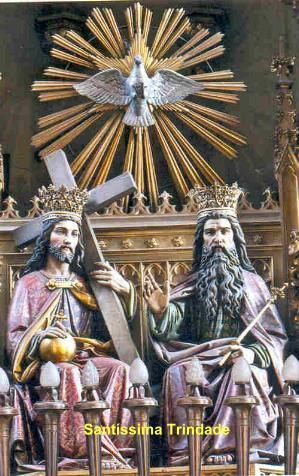

=ORAÇÕES=

DEUS, PAI de Misericórdia, que fizestes de Santo Antonio de Sant' Anna Galvão um instrumento de caridade e de paz no meio dos irmãos, concedei-nos por sua intercessão, favorecer sempre a verdadeira concórdia. Por NOSSO SENHOR JESUS CRISTO, Vosso FILHO, na unidade do ESPÍRITO SANTO. Amém.
NOVENA AO
SANTO ANTONIO DE SANT’ ANNA GALVÃO
DEUS de Amor, fonte de todas as luzes, que cumulastes de bênçãos o Vosso Santo Antonio de Sant’ Anna Galvão, nós Vos adoramos e glorificamos, e Vos agradecemos porque nele fizestes maravilhas.
Ele, SENHOR, por Vossa inspiração, criou para o Vosso povo sofrido aquelas Pílulas, sinal de Vossa compaixão para com os irmãos enfermos, sinal seguro da mediação da VIRGEM MARIA IMACULADA. Alcançai-nos, pela intercessão de Vossa MÃE e do Santo Antonio de Sant’ Anna Galvão, que nós, ao tomarmos com fé e devoção estas Pílulas, consigamos a graça desejada (pedir a graça: ...................), e procuremos conhecer, sempre mais o Evangelho que ele viveu, cultivando com amor a vida Eucarística. Ó Santo Antonio de Sant’ Anna Galvão, rogai por nós junto a MARIA, para que obtenhamos do PAI Celeste a vida plena no amor da SANTÍSSIMA TRINDADE. Amém!
PAI NOSSO + AVE MARIA + GLÓRIA AO PAI
1 - Rezar a oração durante nove (9) dias seguidos.
2 – No primeiro dia tomar uma Pílula de Frei Galvão.
3 – No quinto (5º) dia tomar outra Pílula.
4 – No último dia da Novena tomar a terceira (3ª) Pílula.
APRESENTAÇÃO
Este Site foi construído pelo Apostolado dos Sagrados Corações. Clique aqui ou no endereço abaixo para visitar o nosso PORTAL. Nele encontrará uma apreciável quantidade de Sites sobre o CRIADOR, o ESPÍRITO SANTO, JESUS DE NAZARÉ, sobre NOSSA SENHORA, os ANJOS DO SENHOR e Sites que apresentam a Vida e Obra de diversos SANTOS. Todos eles elaborados com muita dedicação, sobretudo, fundamentados na Sagrada Escritura, na Tradição Cristã, na Vida e Obra dos Santos e nas Manifestações Sobrenaturais, com a intenção de informar somente a Verdade.
http://www.apostoladosagradoscoracoes.com.br/
Desejando comunicar-se conosco, favor utilizar o E-mail clicando na imagem abaixo:

"FIRMAS DE BUSCA"